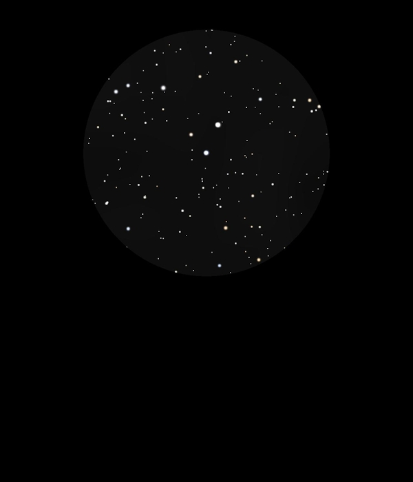

F G W Struve 2470 and 2474
Double Double Stars in Lyra
HIP 94043, HIP 94039 and HIP 94076, HIP 94075
Mags 7.0 and 8.4 and 6.7 and 7.9
23/08/16
Another double double to rival epsilon Lyrae
HIP 94043 is Mag 7.0 with a companion of Mag 8.4
In the same 12mm FOV is HIP 94076 at Mag 6.7 with a companion
of 7.9
Both pairs are parallel to each other and at the same
separation
Really good!